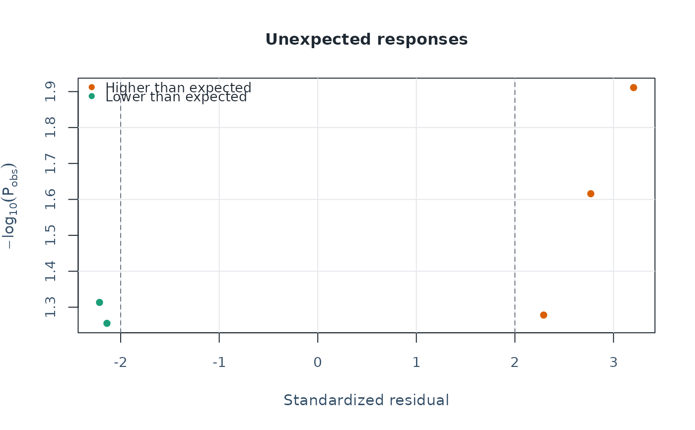

Build an unexpected-response screening report
Usage
unexpected_response_table(
fit,
diagnostics = NULL,
abs_z_min = 2,
prob_max = 0.3,
top_n = 100,
rule = c("either", "both")
)Arguments
- fit
Output from
fit_mfrm().- diagnostics
Optional output from
diagnose_mfrm().- abs_z_min
Absolute standardized-residual cutoff.
- prob_max
Maximum observed-category probability cutoff.
- top_n
Maximum number of ranked rows to return in
table. Summary counts and percentages always use all flagged observations.- rule
Flagging rule:
"either"(default) or"both".
Value
A named list with:
table: flagged response rowssummary: one-row overviewthresholds: applied thresholds
Details
A response is flagged as unexpected when:
rule = "either":|StdResidual| >= abs_z_minORObsProb <= prob_maxrule = "both": both conditions must be met.
Missing inputs preserve an unavailable rule outcome unless the other
condition determines the result (for example, a true condition suffices
for either). Summaries retain evaluated and unavailable counts; the
full-sample percentage is withheld if any outcome is unavailable.
The table includes row-level observed/expected values, residuals, observed-category probability, most-likely category, and a composite severity score for sorting.
Interpreting output
summary: prevalence of unexpected responses under current thresholds, before limiting the displayed rows withtop_n.table: ranked row-level diagnostics for case review.thresholds: active cutoffs and flagging rule.
Compare results across rule = "either" and rule = "both" to assess how
conservative your screening should be.
Typical workflow
Start with
rule = "either"for broad screening.Re-run with
rule = "both"for strict subset.Inspect top rows and visualize with
plot_unexpected().
Further guidance
For a plot-selection guide and a longer walkthrough, see
mfrmr_visual_diagnostics and
vignette("mfrmr-visual-diagnostics", package = "mfrmr").
Output columns
The table data.frame contains:
- Row
Original row index in the prepared data.
- Person
Person identifier (plus one column per facet).
- Score
Observed score category.
- Observed, Expected
Observed and model-expected score values.
- Residual, StdResidual
Raw and standardized residuals.
- ObsProb
Probability of the observed category under the model.
- MostLikely, MostLikelyProb
Most probable category and its probability.
- Severity
Composite severity index (higher = more unexpected).
- Direction
"Higher than expected" or "Lower than expected".
- FlagLowProbability, FlagLargeResidual
Logical flags for each criterion.
The summary data.frame contains:
- TotalObservations
Total observations analyzed.
- UnexpectedN, UnexpectedPercent
Known flagged count and full-sample percentage. The percentage is unavailable when any rule outcome is unknown; the count is unavailable when no response can be evaluated.
- EvaluatedObservations, UnavailableObservations
Responses whose rule outcome is determined or unavailable.
- AbsZThreshold, ProbThreshold
Applied cutoff values.
- Rule
"either" or "both".
Examples
# \donttest{
library(mfrmr)
toy <- load_mfrmr_data("example_operational")
fit <- fit_mfrm(
data = toy,
person = "Person",
facets = c("Rater", "Criterion"),
score = "Score",
method = "MML",
model = "RSM"
)
diagnostics <- diagnose_mfrm(fit)
unexpected <- unexpected_response_table(
fit, diagnostics = diagnostics, abs_z_min = 1.5, prob_max = 0.4, top_n = 5
)
unexpected$summary # Counts and percentages for all flagged observations
#> # A tibble: 1 × 10
#> TotalObservations EvaluatedObservations UnavailableObservations UnexpectedN
#> <int> <int> <int> <int>
#> 1 282 282 0 141
#> # ℹ 6 more variables: UnexpectedPercent <dbl>, LowProbabilityN <int>,
#> # LargeResidualN <int>, Rule <chr>, AbsZThreshold <dbl>, ProbThreshold <dbl>
unexpected$table # Only the five highest-ranked cases
#> Row Person Rater Criterion Weight Score Observed Expected Residual
#> 1 90 P016 R02 Organization 1 4 4 1.712717 2.287283
#> 2 69 P012 R03 Organization 1 4 4 1.881621 2.118379
#> 3 282 P048 R06 Organization 1 4 4 2.126046 1.873954
#> 4 121 P021 R04 Content 1 1 1 2.867349 -1.867349
#> 5 145 P025 R04 Language 1 1 1 2.815285 -1.815285
#> StdResidual ObsProb MostLikely MostLikelyProb CategoryGap Surprise
#> 1 3.204010 0.01227149 2 0.4446563 2 1.911103
#> 2 2.769635 0.02422218 2 0.4736443 2 1.615787
#> 3 2.291484 0.05270294 2 0.4734400 2 1.278165
#> 4 -2.214482 0.04860959 3 0.4171721 2 1.313278
#> 5 -2.139004 0.05557605 3 0.4123865 2 1.255112
#> Direction FlagLowProbability FlagLargeResidual Severity
#> 1 Higher than expected TRUE TRUE 6.115113
#> 2 Higher than expected TRUE TRUE 5.385422
#> 3 Higher than expected TRUE TRUE 4.569650
#> 4 Lower than expected TRUE TRUE 4.527760
#> 5 Lower than expected TRUE TRUE 4.394117
plot(unexpected)

# The rule is exploratory: inspect the scoring context before changing a rating
# }